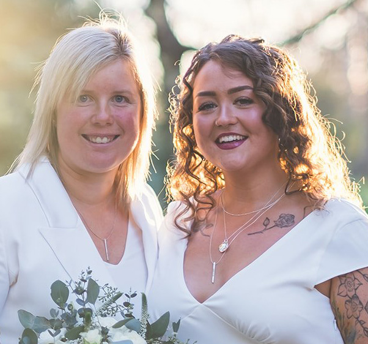
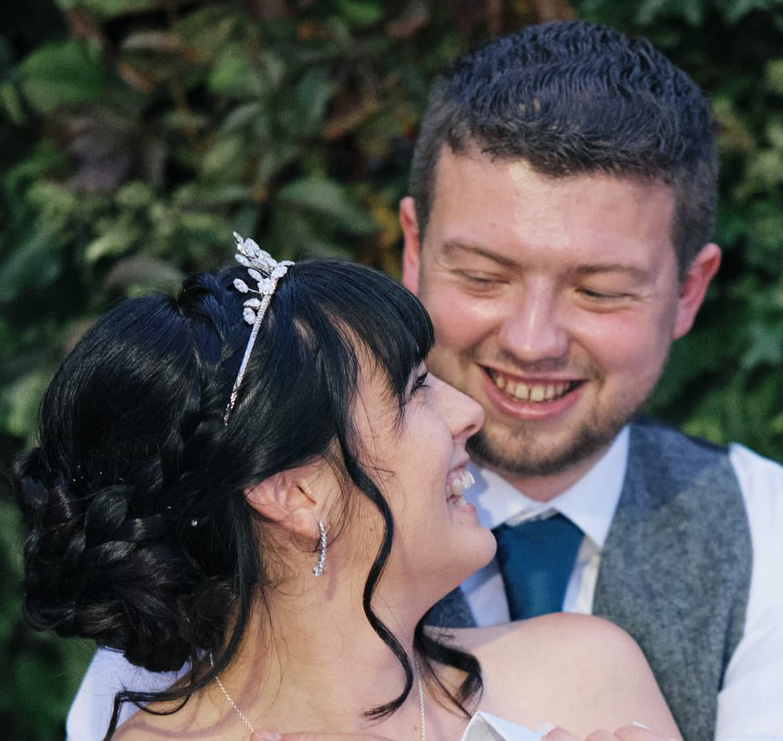

GWPhoto-Testimonios de CLIENTES

Ana y María:
Este fotógrafo maravilloso ha inmortalizado este momento tan importante en nuestras vidas

Lorena y Juan:
GWPhoto nos brindó su servicio con amabilidad y profesionalismo
Carolina y Alberto:
Nos brindó un servicio sin interferir en nuestra fiesta, prácticamente no notamos su presencia, a pesar de lo cual no quedó ni un solo detalle sin registrar